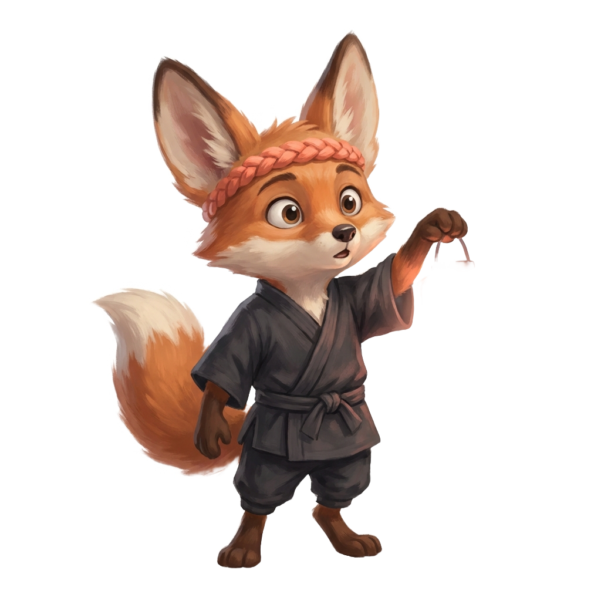
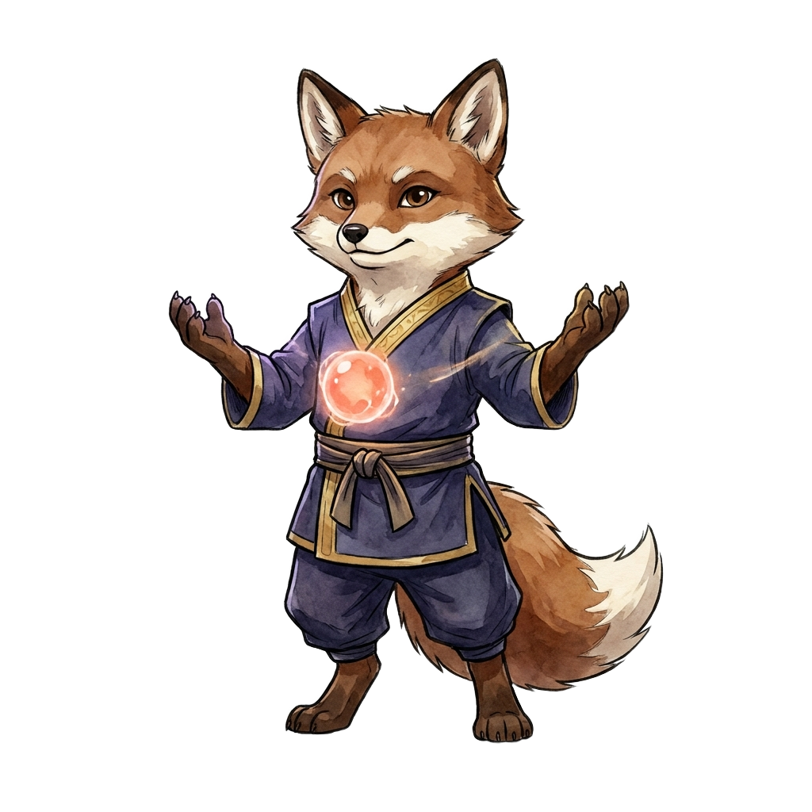

Kâşif Yolu · kodlama öğrenKeşfet, üret,
kendi şeyini kur.
Sıfırdan kodlama: ilk oyunundan ilk uygulamana.
- Scratch & Roblox ile oyun
- Python ile gerçek programlama
- Web & ilk AI projeleri
İki yol, tek ustalık: kodlamayı sıfırdan öğren ya da işini yapay zekâyla büyüt. İzleyerek değil, gerçek projeler üreterek. 8 yaşından itibaren, ailecek.
AI araçları her altı ayda değişiyor; bugün öğrendiğin tool yarın eskiyor. Biz tool ezberletmiyoruz — AI ile düşünmeyi öğretiyoruz. Su gibi: hangi araç gelirse gelsin, sen uyum sağlarsın. Her dönem elinde gerçek bir iş çıkar.
Tek okul, iki yol. Birinde kodlamayı sıfırdan öğrenir üretirsin; diğerinde yapay zekâyı işine gömersin. İkisi de aynı kuşak ritmini paylaşır.

Kâşif Yolu · kodlama öğrenSıfırdan kodlama: ilk oyunundan ilk uygulamana.

Kurucu Yolu · işini geliştirKod-fu: AI araçlarında giriş'ten pro'ya ustalık.
Her kurs kohort temelli, canlı ve önce-proje. Yolunu seç, kataloğa göz at.
İlk dijital adımlar: blok kodlama, animasyon, oyun ve yaratıcılık.
Sürükle-bırak bloklarla kendi oyununu ve hikâyeni kur.
Roblox Studio'da Lua ile gerçek oyunlar tasarla ve yayınla.
Gerçek metin tabanlı programlama: temel kavramlar ve mantık.
Web geliştirme ve yapay zekâ/ML'ye giriş — projeyle pekiştir.
HTML, CSS ve JavaScript ile kendi web sitelerini yayına al.
Müfredat mimarisi Kodland kurslarından ilham alır; içerik Codyz tarafından kohort ve şaheser için yeniden yazılır.
Uzun düşünme, yazma, analiz ve kodlamada güvenli AI ortağın.
Günlük işlerden ileri otomasyona GPT'yi ustaca kullan.
Google ekosistemiyle çok-modlu üretim ve araştırma.
Yapay zekâ destekli arama ve ajanlarla hızlı sentez.
Kendi belgelerinden kaynaklı, güvenilir araştırma asistanı.
AI'dan en iyiyi almanın dili: yapı, bağlam, zincirleme.
İşini kendi kendine yürüten ajanlar ve uçtan uca akışlar.
Higgsfield, Midjourney, Veo ile marka ve içerik üretimi.
Sektöre özel popüler araçlar dönemsel olarak eklenir — araç değişse de yöntem kalır.
Canlı derste, AI'a hâkim Ustalarla, küçük grupta.
Her hafta projenin bir parçasını kurarsın; ezber değil pratik.
Dönem sonunda gerçek bir iş çıkarırsın.
Şaheserini topluluk önünde sunar, üst kuşağa geçersin.
Hepsi kendi platformumuzda, tamamen online.
İki yol da aynı kuşakları paylaşır. Beyazdan başlar, mürekkebe iner.
İlk küçük şeyini kur; aracı ve mantığı tanı.
Gerçek bir şey kur: oyun, mini app ya da ilk agent.
İşine ya da oyununa kodu ve AI'ı göm.
Kendi yolunu çiz, üret, başkasına öğret.
Her kuşağı şaheserinle —aile ve topluluk önünde sunduğun gerçek bir projeyle— atlarsın.
Her dönem mezuniyet bir gösteridir. Kâşifler projelerini ailelerinin önünde sunar; Kurucular o dönemin tüm öğrencilerinin katıldığı online etkinlikte şaheserlerini paylaşır. Sertifikanı alırsın, ama asıl ödülün elindeki gerçek iştir.

Eğitmenlerimiz AI'ı ve kodu sadece anlatmaz, kullanır.
Kodlama yolu · dönemlik · küçük grup · kuşak ilerlemesi. Scratch'ten Python'a, ilk oyununu ve app'ini kur.
Fiyat ve taksit için tanışma dersinde.
Tanışma dersi alKod-fu yolu · AI araçlarında giriş→pro. Claude, GPT, Gemini ve ajanlarla işine dokunan çıktı.
Fiyat ve taksit için tanışma dersinde.
Tanışma dersi alKâşif + Kurucu birlikte · avantajlı paket. Çocuk kodlamayı öğrenirken ebeveyn işini AI'la büyütür.
Fiyat ve taksit için tanışma dersinde.
Aile paketini görYeni başlıyoruz; ilk kuşağın kurucu üyeleri sınırlı kontenjanla alınır. Kod-fu'yu bilenlerin kulübüne erkenden gir.
Kodlamayı öğrenmek istiyorsan Kâşif Yolu; işini ya da kendini yapay zekâyla geliştirmek istiyorsan Kurucu Yolu. Emin değilsen tanışma dersinde birlikte karar veririz.
Claude, ChatGPT, Gemini, Genspark, NotebookLM gibi popüler araçları giriş ve pro seviyesinde; ayrıca prompt mühendisliği, AI ajanları ve sektöre özel araçları. Araç değişse de yöntem kalır.
Evet, beyaz kuşak tam da bunun için. Her iki yol da sıfırdan başlar.
Kâşif Yolu 5+ (yaşa göre kurs), Kurucu Yolu her yaş. Aile paketinde ikisi birlikte.
Kendi platformumuzda canlı, küçük gruplarla. Moderasyonlu topluluk, veli görünürlüğü, kapalı ortam.
Evet, her kuşak için. Ama asıl ödül elindeki şaheser.